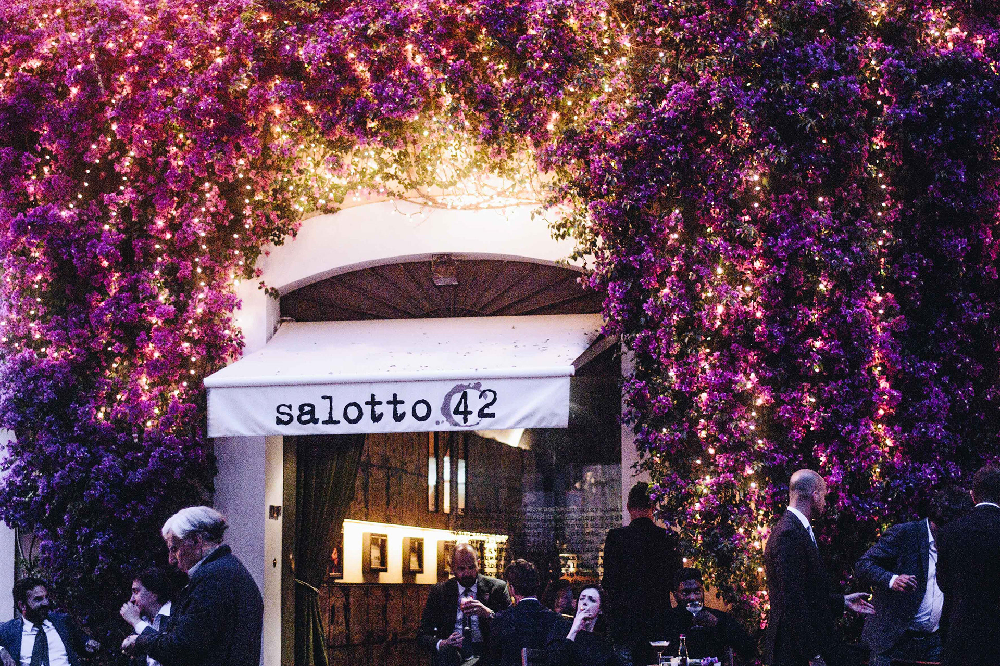

Places
When I travelling, one of the things I like to do the most is to explore the area with my camera. To catch a moment on photo is the coolest thing I know. To have a extra minute to see the place from my camera perspective is very important to me while visiting a new place. The two following photos is from two different weekend trips in Europe.
Closing for today. Milan 2018.
Salotto 42 shining. Rome 2016.